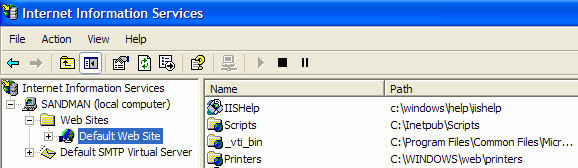
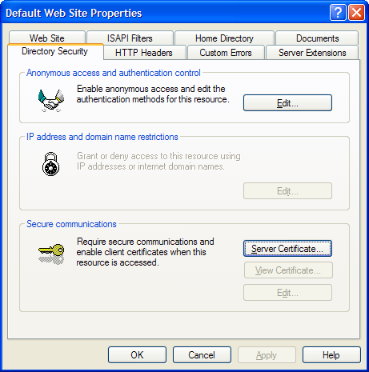
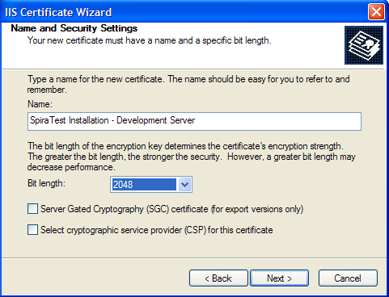
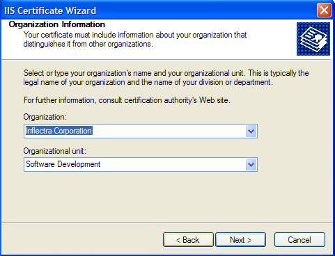
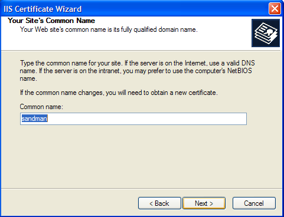
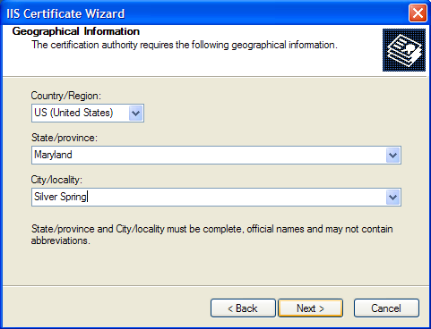
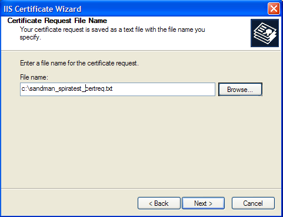
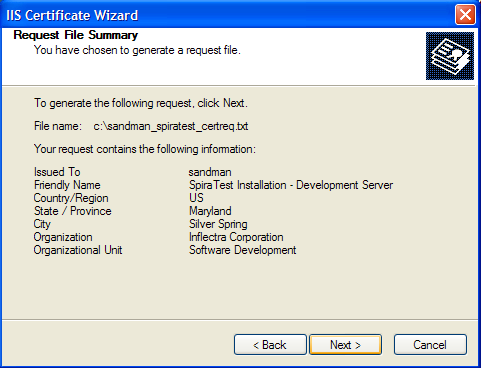
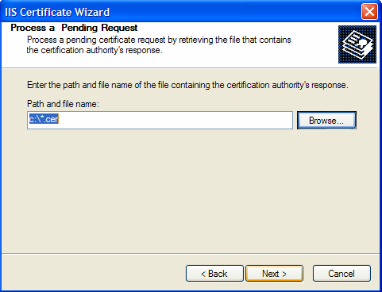
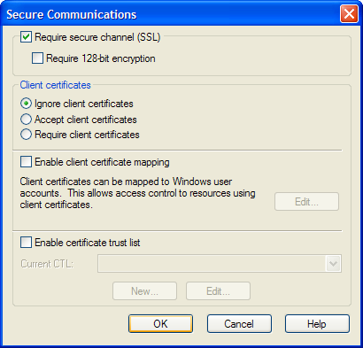

Appendix B -- Using with SSL
This section outlines how you can install a Secure Sockets Layer (SSL) certificate onto IIS to allow users to access KronoDesk® via an encrypted protocol, so that usernames, passwords and sensitive project data cannot be "sniffed" across the network. This is especially important if your web-server is being accessed across the Internet.
This section assumes that you already have a Certificate Authority (CA) available to generate an SSL certificate for you. This can either be a third-party provider (e.g. Verisign) or a tool used to generate "self certificates" that can be used internally to your organization. For more information on the differences between these two options, please read the following documents:
http://www.microsoft.com/technet/prodtechnol/WindowsServer2003/Library/IIS/8d3bb71a-0a7f-443f-8084-908d0dab9caa.mspx?mfr=true (installing self or third-party certificate on Windows Server 2003)
http://www.somacon.com/p42.php (installing self-certificate on Windows XP)
Once you have decided how you will generate the certificate, you next need to generate the request for the certificate from your web server. First, click Start > Settings > Control Panel > Administrative Tools > Internet Information Services to bring up the IIS management console:

Now, right-click on the "Default Web Site" and choose "Properties", then click the "Directory Security" tab:

Now, click the button marked "Server Certificate", click <Next> and choose the option marked "Create a new certificate", and click <Next>. You can then choose to either prepare the certificate request and sent it later, or to send the certificate request immediately to an online CA. If you are using a third-party CA and are connected to the Internet choose the second option, otherwise choose the first option.

Enter the name for the certificate, typically this will contain the name of the organization, purpose of the certificate and any other pertinent information that will help you distinguish it.
You should choose a bit-length of at least 2048 bits, and leave the other options unchecked unless you are using the server outside of the United States, in which case you will need to choose the "Server Gated Cryptography (SGA)" option. Click the <Next> button when you are finished.

Now enter the organization and organizational unit name that best describes who is requesting the certificate. Click <Next> when you are finished.

Next enter the "common name" for the web site that will be using the certificate. For a website that will be accessed across the Internet, this should the fully qualified domain name (e.g. www.mysite.com), whereas for a website that is limited to a local intranet, the computer name will suffice (e.g. myhost). Click <Next> when you are finished.

Next enter the country / region, state / province and city / locality that best describe where the web-server will operate or where the organizational entity resides. Once you are finished, click <Next>.

Next, enter the filename that you want to use for the certificate request file. This is the file that you will send to the Certificate Authority (CA) to request an SSL certificate. This filename should be memorable and describe what the certificate is for. The file extension should be .txt. Click <Next> once you have finished entering the filename.

Finally, you will get a confirmation screen that verifies the information you have entered. If you want to make changes, click the <Back> button, otherwise click <Next> to actually generate the certificate. Once finished, you will now have the certificate request file that you can send to the Certificate Authority (CA) to process your request.
Once the CA has processed your request, they will send back the actual SSL certificate that you can install onto your web-sever. The next steps will describe how to install the certificate once you receive it back from the CA.
Once you have received the SSL certificate back from the CA, save the file onto your hard-disk with the file-extension .cer. Now open up the IIS management console (as described above), right-click on the "Default Web Site" icon and choose "Properties". Now select the "Directory Security" tab, and click the button marked <Server Certificate> under the heading "Secure Communications". When the dialog box appears, choose the second option -- to process an existing request. This will bring up the following dialog box:

Now, browse to the place on your hard disk where you saved the SSL certificate (with extension .cer) and select the file you saved. Click <Next> to load the certificate. Once the certificate has been loaded, all that remains is to tell IIS to require a secure HTTPS connection, so that users don't attempt to access the website over the unencrypted HTTP protocol.
From the IIS properties dialog box, click the button marked <Edit> under the "Secure Communications" heading:

Check the box marked "Require secure channel (SSL)", and click the <OK> button. You have now successfully configured IIS for secure HTTPS data transmission.